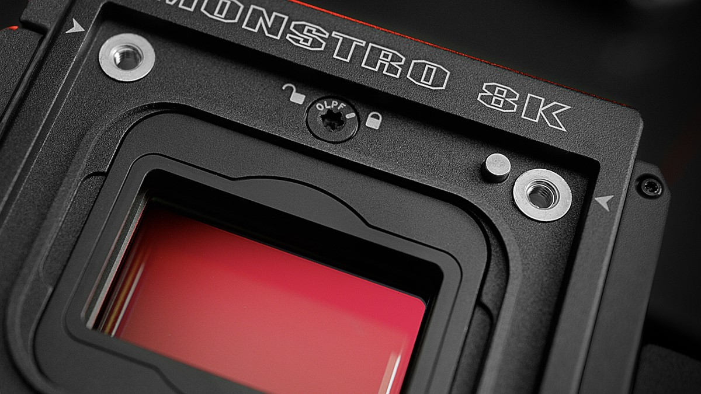
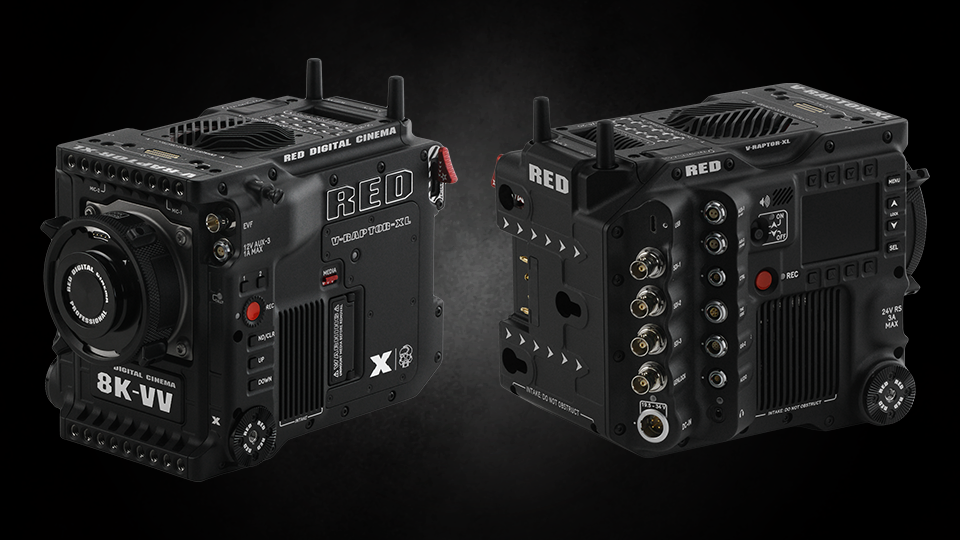
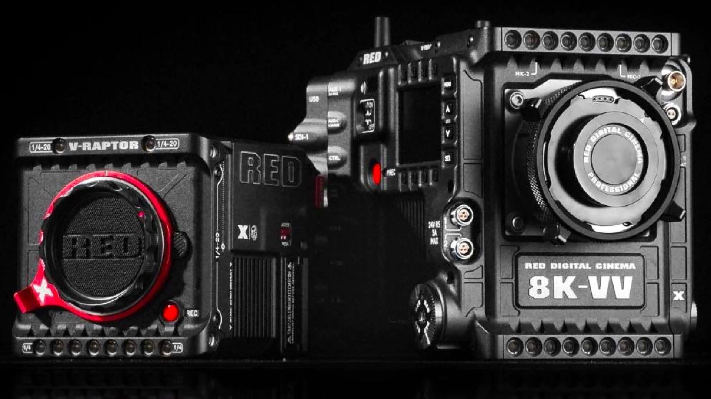
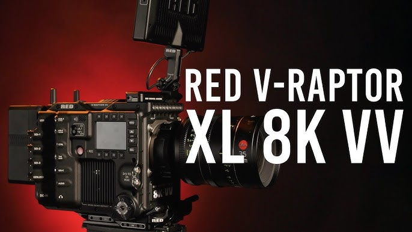

Sensor
- Global Shutter CMOS sensor
- Full Frame / Vista Vision (VV) format
- 35.4MP total resolution
- 8192 × 4320 effective pixels (8K capture)
- Sensor dimensions: ~40.96 mm × 21.60 mm
- Designed for motion accuracy with no rolling shutter distortion

Connectivity & Ports
- Dual 12G-SDI outputs for professional monitoring and broadcast integration
- 5-pin LEMO audio input with phantom power support
- 3.5mm headphone output for real-time monitoring
- 6-pin LEMO DC power input (11–17V) for cinema-grade power delivery
- USB-C for control, firmware, and data transfer
- 9-pin EXT port for timecode, genlock, and sync workflows
- CFexpress Type B slot for high-speed recording media

Key Features
- 8K Full-Frame global shutter imaging for distortion-free motion capture
- Up to 120fps in 8K for cinematic slow motion
- 20+ stops of dynamic range for highlight and shadow retention
- REDCODE RAW workflow for flexible post-production control
- Compact cinema body designed for rigs, drones, and handheld setups
- Built for high-end film, commercial, and virtual production pipelines

Built for Production
- Engineered for demanding professional film environments
- Reliable performance in high-speed and high-pressure shoots
- Seamless integration into modern cinema pipelines
- Trusted for commercials, film production, and virtual sets
- Optimized for mobility without sacrificing image quality